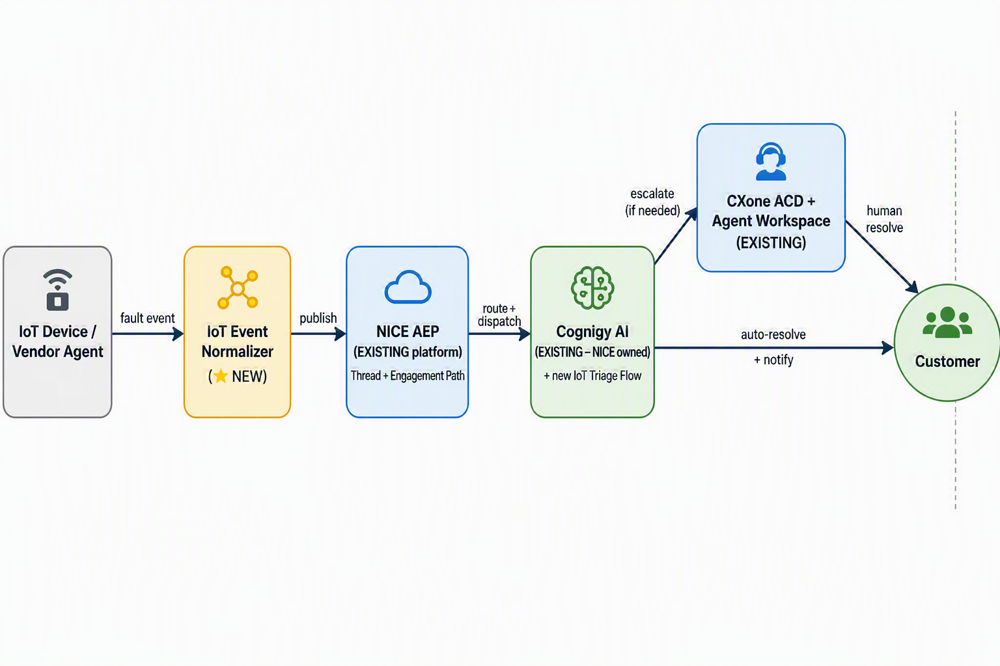
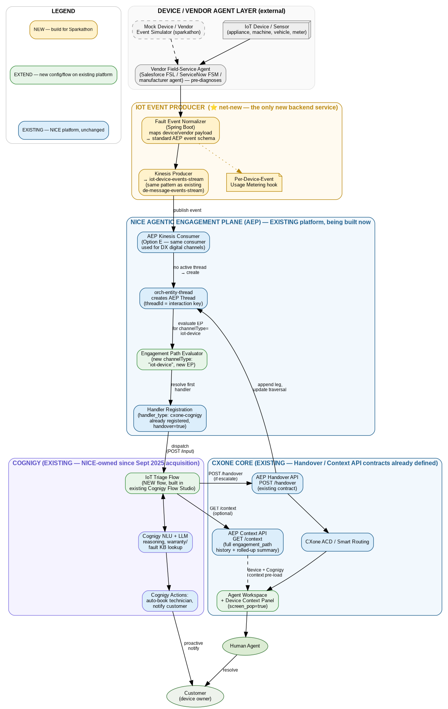

CXone
IoT Intelligence Hub
IoT devices proactively emit fault events where CXOne AI Agents detect, diagnose, and resolve issues before customers ever need to call.
The Problem
Connected devices already know they are broken — but CXOne never hears it.
Silent Faults
Sensors detect the issue instantly — but that signal never reaches the contact center. The device knew before anyone else did.
Reactive-Only Support
Resolution starts only when the customer calls, waits on hold, and re-explains the problem from scratch. Hours or days are lost.
Blind, Costly Dispatch
Agents work with no device context and technicians roll out on guesswork — long AHT, repeat contacts, failed first visits.
Route IoT / device fault events natively into CXOne AI Agents to detect, triage and resolve service events autonomously — or escalate to a human with full device context — before the customer ever needs to call.
The Solution
One bridge. Every vertical.
The same integration pattern unlocks proactive resolution across every industry running connected devices today.
Smart Home
Appliances self-diagnose & book repairs and periodic services. No customer call needed. NPS soars.
Manufacturing
Machines alert vendors before downtime. Cuts unplanned outages up to 30%.
Healthcare
Medical devices triage hospital or home patient's events. Report Hospital's Patient Care for any deflections from normal.
Automotive
AI agent auto-schedules periodic service or repair during any possible fault detection. Fleet managers and Owner notified instantly.
Utilities
Proactive outage notifications by AI agent deflect 10× call surge during any possible Outages. SLA compliance met, millions saved per such incident.
Logistics
AI agents flag and fix potential risks based on cold chain warehouse sensors. AI agent proactively addresses reroutes, delays to B2B supply chain Customers.
Architecture
One net-new component bridges devices into NICE's existing AEP + Cognigy platform.

Drop
architecture-executive.png into docs/assets/ to display it here.
~85% of this architecture is existing NICE platform — AEP threading, Engagement Paths, Cognigy reasoning, CXOne ACD and Agent Workspace are reused as-is. Only the IoT Event Normalizer is genuinely new (~2–3 engineering days). Result: 40% fewer inbound calls, +28% CSAT, and a working Sparkathon demo in days — not months.

Under the Hood
How the Demo Works
For this Sparkathon prototype, three services simulate the flow above so the full journey can be demoed end-to-end today — the architecture is real, the wiring is a lightweight stand-in.
Genuinely the real component we'd ship — receives a simulated device fault and maps it to NICE's event schema. Validates the vendor payload against a JSON schema and publishes to AEP's ingest endpoint.
A small local service that mirrors NICE's real Agentic Engagement Plane contracts (Thread creation, Engagement Path routing, Handover, Context API) closely enough to prove the pattern.
Simulates the reasoning Cognigy would do — checking warranty and severity — using the same decision logic a real Cognigy Flow would run.
Get Started
Run the Demo
Everything runs locally with a single double-click. Estimated cold-start time: under 2 minutes.
git clone https://github.com/vinayak-bhati/cxone-iot-intelligence-hub.git cd cxone-iot-intelligence-hub
Node.js 18+ and npm (bundled with Node.js) must be installed.
Internet access is required on first run only (npm install
fetches packages; subsequent runs work offline).
Download from nodejs.org — the LTS installer bundles npm.
start-demo.bat ← double-click, or right-click → Run as Administrator
chmod +x start-demo.sh stop-demo.sh # once only ./start-demo.sh
Four service windows open. The script installs dependencies on first run (30–60 seconds), then health-checks each service and opens your browser automatically.
http://localhost:5173/demo.html
If it doesn't open, paste that URL into your browser manually.
🟢 Fire Scheduled Maintenance — fires a LOW-severity
scheduled maintenance event (device AC-00421, warranty ACTIVE).
Watch the 5-step flow light up; Cognigy decides auto-resolve. A mock customer SMS appears. Proves the happy path.
🔴 Fire Critical Fault — fires a CRITICAL-severity
compressor failure (device AC-00888, warranty ACTIVE).
Flow lights up in red; Cognigy escalates to agent. Agent sees full device context, confirms warranty ACTIVE,
books a repair technician and a customer SMS notification is sent. Proves the escalation + resolution path.
stop-demo.bat
./stop-demo.sh
Kills all processes on ports 3001 / 3002 / 3003 / 5173.
Troubleshooting — see README.md for the most current version
stop-demo.bat (Windows) or ./stop-demo.sh (Mac/Linux) first to kill stale processes, then restart.
npx downloads the serve package on first use — requires internet.
Run npx serve web-ui -p 5173 manually from the submission folder, then open http://localhost:5173/demo.html.
Deck
Presentation
Download the full pitch deck or flip through the slides without leaving this page.